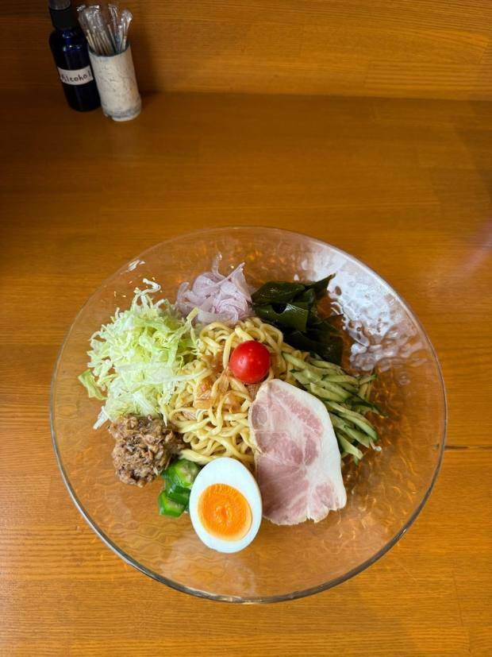
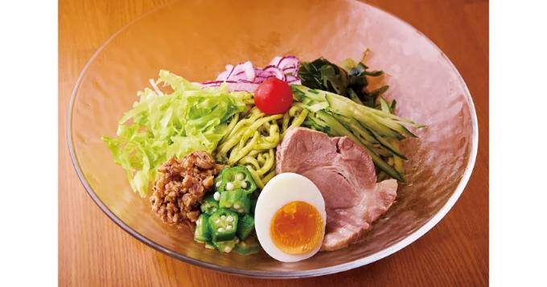

Black Vinegar
¥1,000ブラックビネガー
酸味を飛ばしたマイルドな酢醤油。まろやかで、澄んだ涼感。昼レギュラーの一杯です。
代表の三浦直子さんが「常夏のハワイなら、一年中冷やし中華を楽しんでもらえる」と発想したのが原点。フラダンスイベント運営という異色の経歴の持ち主です。
ハワイ出店は断念しましたが、2016年からNYで3年連続の夏季ポップアップを成功させ、逆輸入のかたちで2019年に赤坂で日本初上陸。赤坂・吉祥寺の間借りを経て、2023年7月27日、西荻窪に初の自店を開きました。
「ないものを、やる」。
一年中、冷やし中華だけを出す。前例のない専門店です。

和洋中の境界を越えて、限定の一杯を頻繁に。
1階イタリアンの店内を抜け、2階のカウンター8席へ。西荻窪の、隠れ家。
杉並区西荻南3-8-10
中根ビル 2F
JR西荻窪駅
南口 徒歩2分
11:30–15:00
(L.O. 14:30)
5–9月 水曜のみ休
10–4月 木金土のみ営業
完全予約制コース ¥8,800（フリーフロー付き／〆のひやちゅう）
03-6826-2900